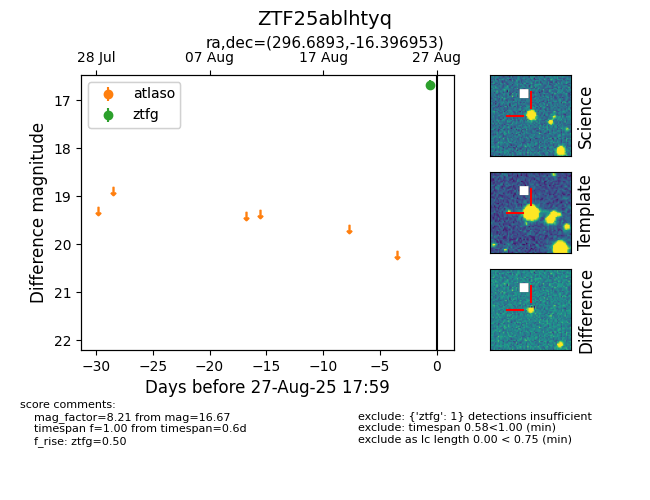

FINK: ZTF25ablhtyq
Lasair: ZTF25ablhtyq
ALeRCE: ZTF25ablhtyq
ZTF25ablhtyq (ztf,fink)
equatorial (ra, dec) = (296.6893,-16.39695)
galactic (l, b) = (23.9840,-19.43939)

last ztfg=16.67
1 ztfg detections